Mario Bros. Using SDL
Overview
As part of my introduction to C++ I was tasked to recreate the original Mario Bros game from 1983 without a game engine and instead utilising SDL Libraries.
This was definitely a tough task as I hadn't programmed a game out of an engine before.
Overall it turned out fairly decently considering I only had 6 weeks to do it.
Game Mechanics
Character Scripts:
The main part of this game was the character class, as this is the parent class to Mario, Luigi, Koopas and even the coin class.
As a result it was one of the largest scripts in the game.
Code Snippets:
Header File
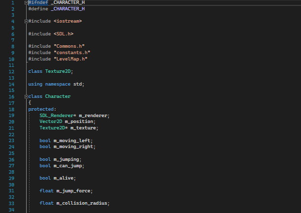
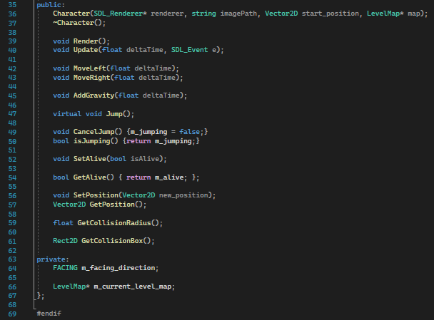
Source File
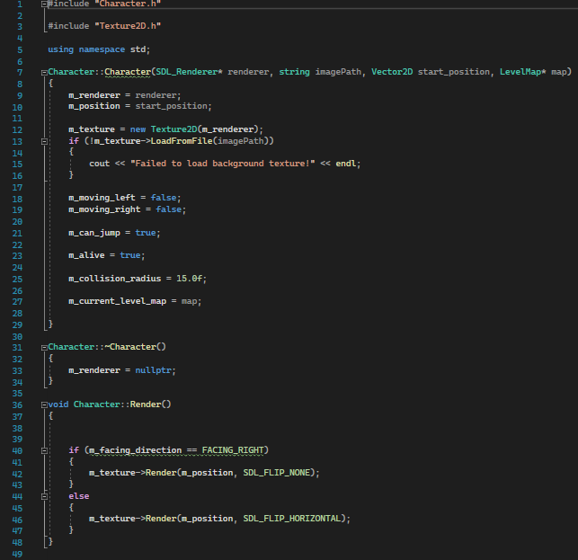
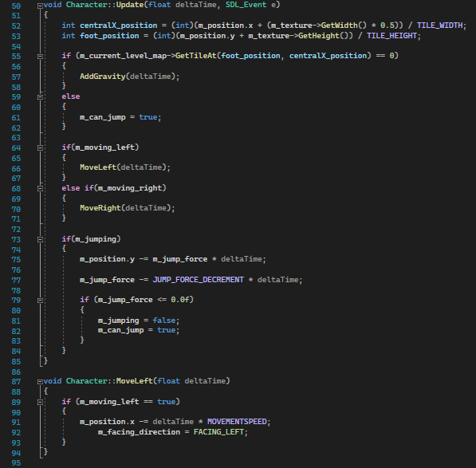
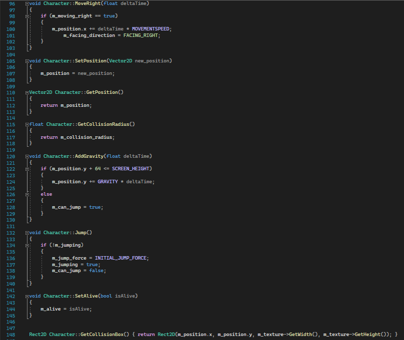
Mario Character:
The Mario character was a child of the main character class, however this required input functions to be added in order to get functionality, as well as setting the movement speed and death variables.
The Luigi class is the exact same as the Mario class, however it just uses different input controls.
Code Snippets:
Header File
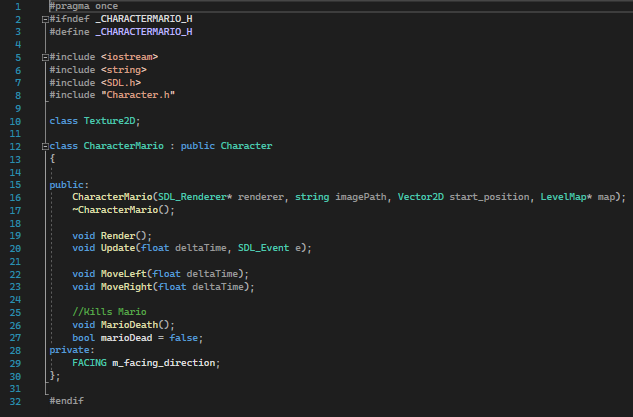
Source File
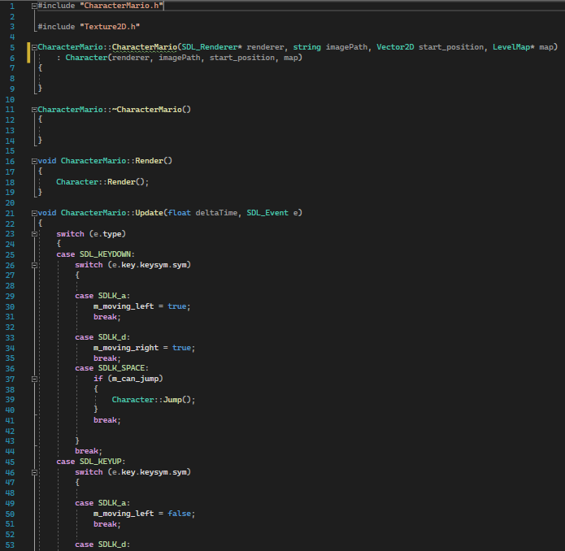
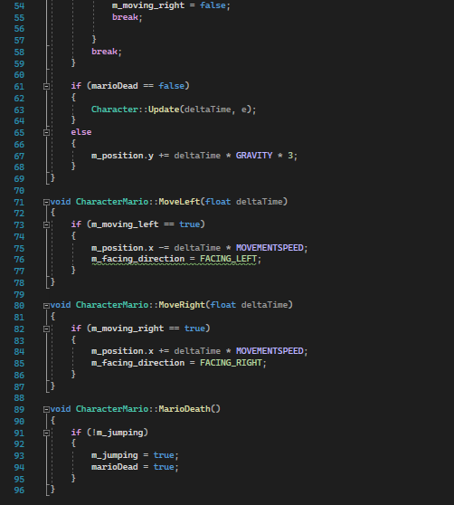
Koopa Character:
Despite being a child of the main character class, the Koopa class was vastly different from Mario as it had to have a flip function which would change its sprite when the POW block was hit.
Also it required an autonomous movement script with the ability to turn and walk the other way when it hit the screen edge.
Code Snippets:
Header File
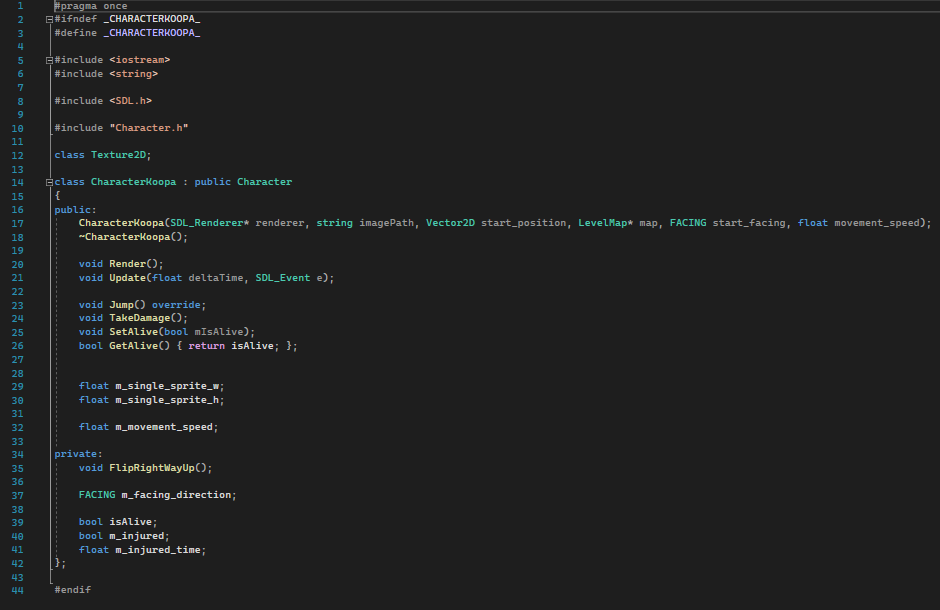
Source File
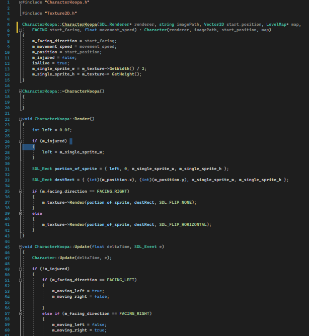
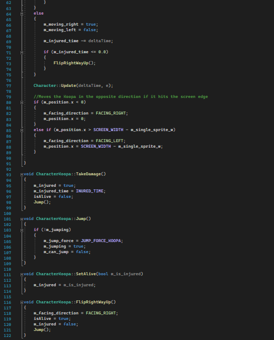
POW Block:
The POW block was another crucial mechanic as when hit, it allowed the players to damage the enemies. Also it had to have the sprite re-rendered every time it was hit. This required multiple checks within the render function.
Code Snippets:
Header File
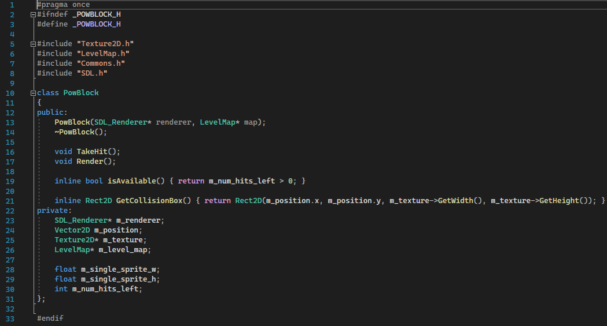
Source File
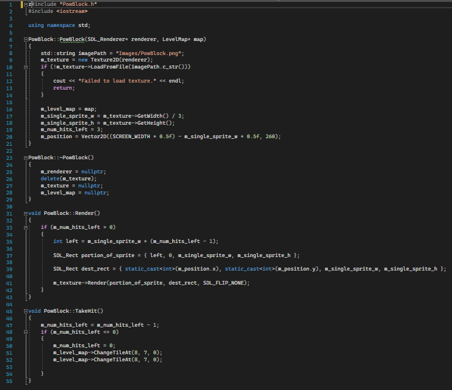
Coin:
The last major mechanic was the coins to collect within the level. These were also a child of the character class so it could utilise the preset collisions there.
That way when hit by Mario or Luigi they would destroy themselves. Also within the render functions and update functions is the functionality to have the coin spin around